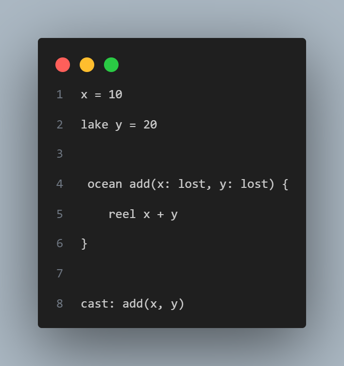
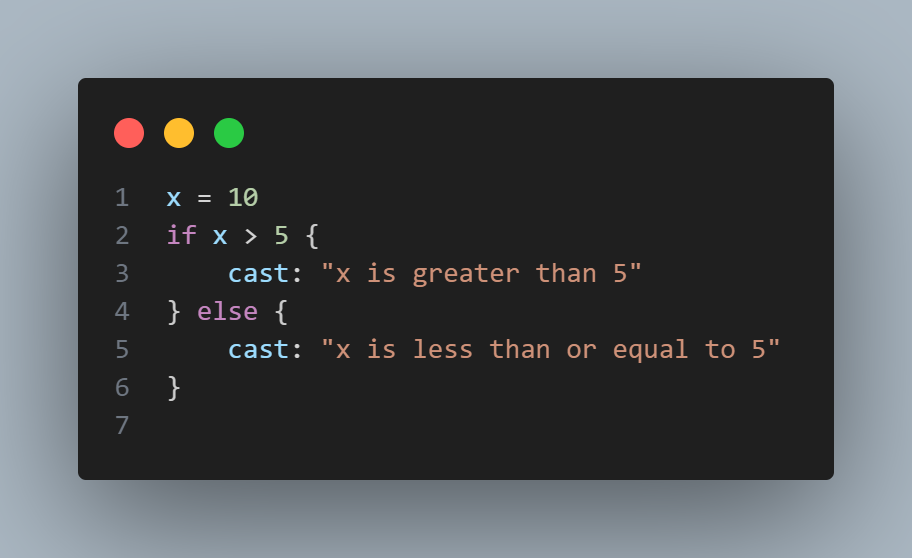
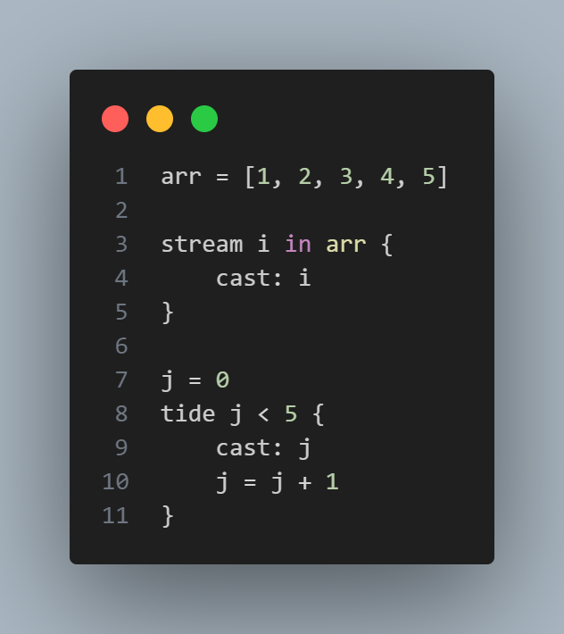
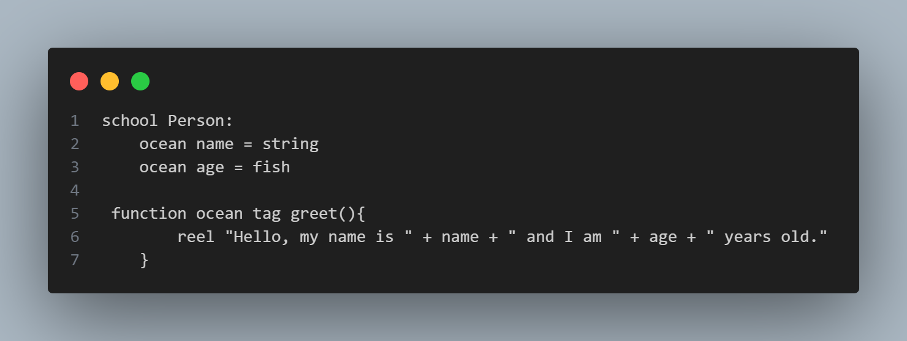
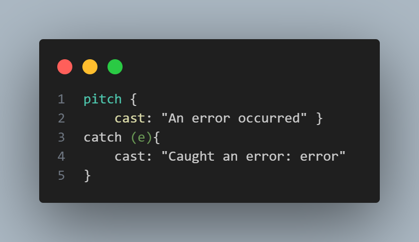

About Cod
Have you ever loved fishing but can't bring your fishing love to the world of programming? This problem can be seen all around the world with fishermen and fisherwoman struggling to make their dreams a reality. Now, today is the day to make those dreams come true. Introducing the COD language which is a class-based statically typed language based around the theme of fishing! COD was based on a love for fishing and its ideas and therefore integrates fishing lingo and ideas throughout the language syntax.
This language also has a wide variety of features not limited to: being Statically Typed, Class-based, Complete lack of ;, Left-to-Right argument evaluation, Use of Public and Private type ideas for hiding, while, for, and a number of time loops, Break and Continue-like statements, Functions with a type, specific character types, and class types
This language was made by the programmers Aidan Esposito, Troy Wu, and Khalid Stewart. We are all computer science students at Loyola Marymount University. We all hope this language grows into something great and is used for many fishing enthusiasts including ourselves.
Example Programs
- Example 1: Variable Declarations and Functions: 
- Example 2: If and Else Statements: 
- Example 3: Looping: 
- Example 4: Classes, Functions, and Objects: 
- Example 5: Error Handling: 
Developer Bios

Khalid Stewart
Creator and Programmer
Hi my name is Khalid and blah blah blah
kstewa17@lion.lmu.edu

Troy Wu
Creator and Programmer
Troy Wu is a junior computer science major/ data science & statistics minor at LMU. He is aspiring to be a software engineer that specializes in algorithm development and UI/UX development to code and always looks forward to a good challenge. With collaboration with other COD developments, he hopes to create a entertaining language that makes the coding experience to be as entertaining as possible.

Aidan Esposito
Creator and Programmer
Aidan Esposito is a junior computer science major at LMU. He is always excited to code and always looks forward to a good challenge. Aidan is always looking into new ideas and concepts that can improve the COD programming language.